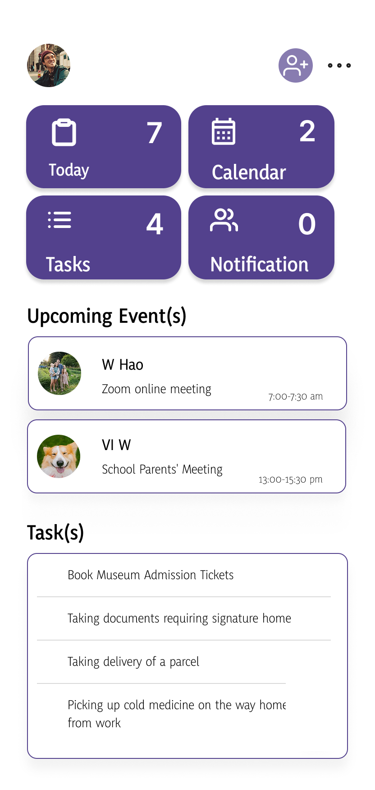
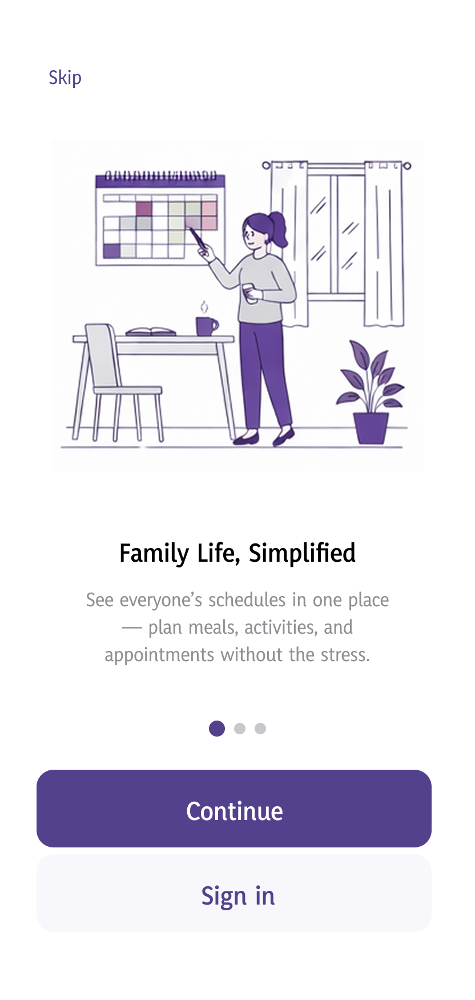
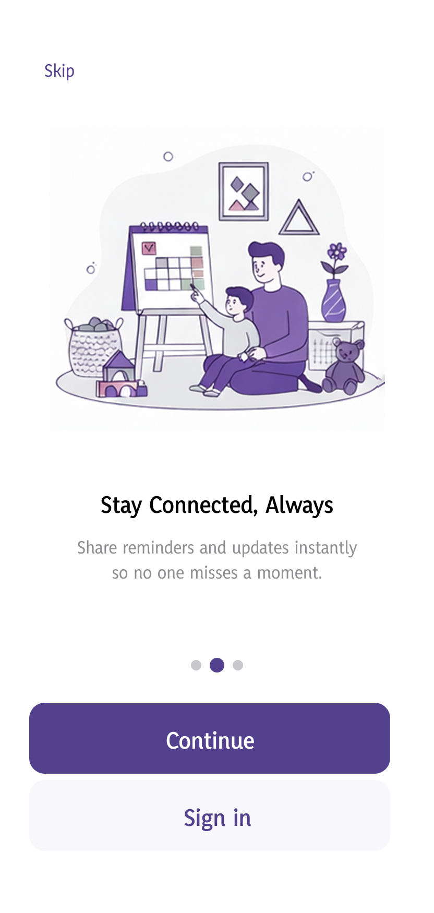
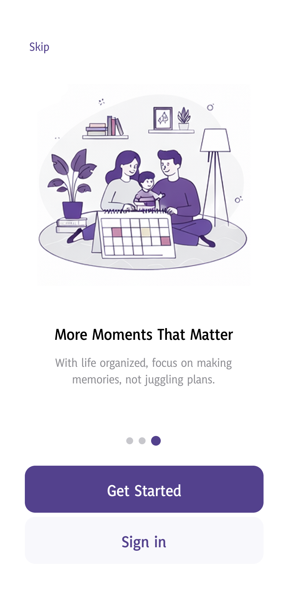
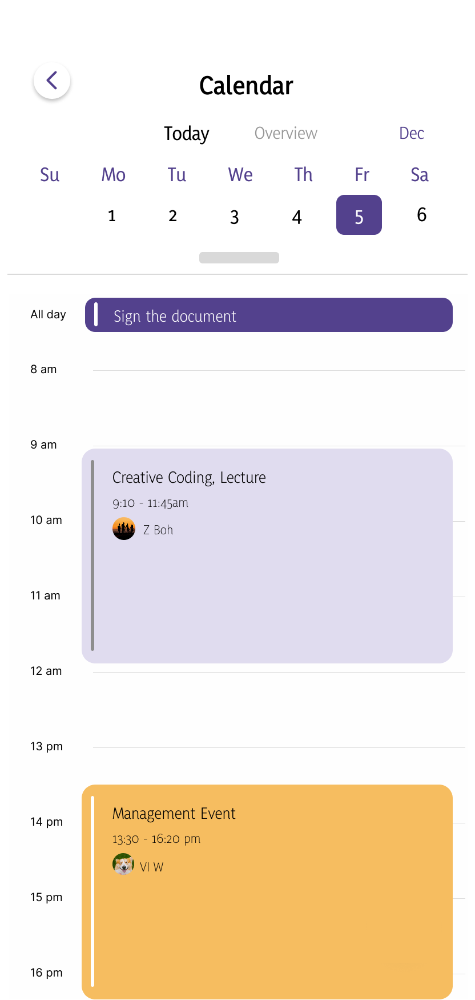
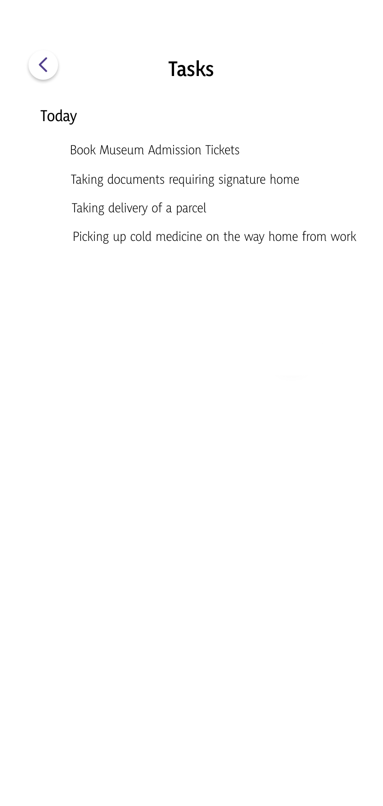
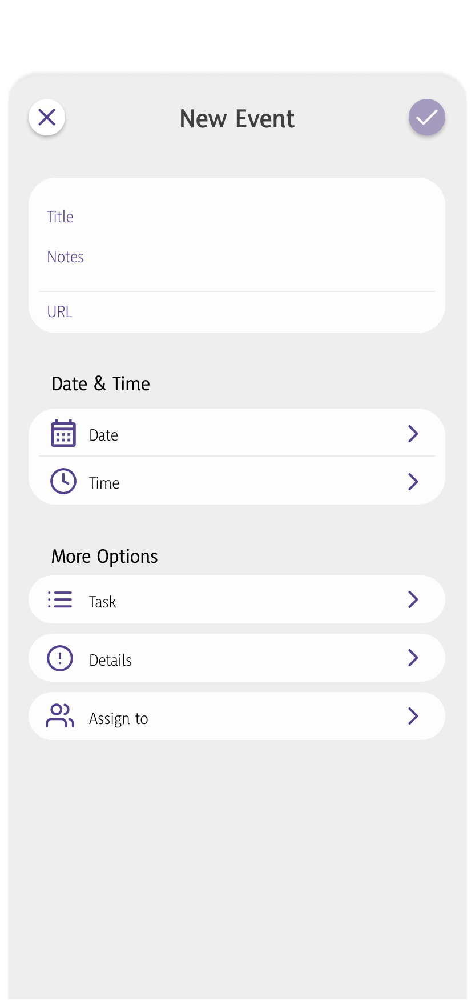
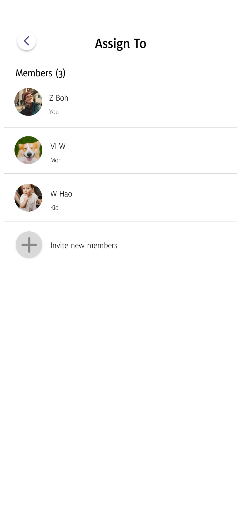
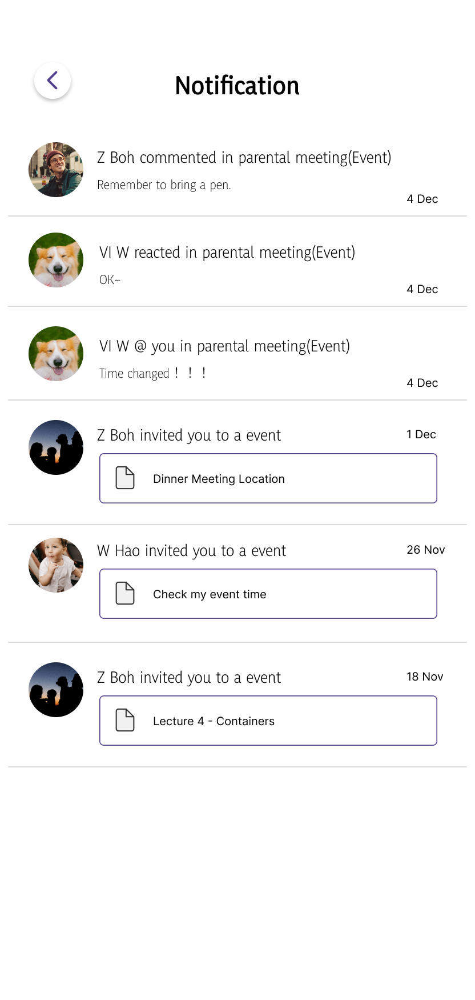

FamilyFlow
一个帮助家庭成员共享日程、任务与提醒的协作类 App。 在这里写一句更具体的项目一句话简介，例如解决了什么问题、面向什么用户。

项目背景
在这里介绍这个项目的起因：为什么想做一个家庭协作 App？目标用户是谁（例如双职工父母、多代同堂家庭）？ 用 2-3 段话讲清楚问题背景，可以补充一些调研数据或访谈发现作为支撑。
用户痛点
写一写调研中发现的核心痛点，每张卡片一个点，配一句具体的用户原话或场景会更有说服力。
日程靠口头传达
家庭成员的安排分散在各自手机里，经常靠口头提醒，容易遗漏或记错时间。
任务分工不清晰
接送孩子、取快递这类琐事没有明确指派给谁，最后变成"谁想起来谁做"。
提醒太多或太少
要么被各类 App 的通知轰炸，要么重要的事情完全没人提醒。
竞品分析
选 2-3 个同类产品做对比，说明它们各自的优劣势，以及 FamilyFlow 想差异化的地方。
| 对比维度 | FamilyFlow | 竞品 A（占位） | 竞品 B（占位） |
|---|---|---|---|
| 共享日历 | 支持，按颜色区分成员 | 支持 | 不支持 |
| 任务指派 | 支持，可指派给具体成员 | 不支持 | 支持 |
| 语音快速创建 | 支持 | 不支持 | 不支持 |
| 价格 | 占位 | 占位 | 占位 |
设计目标
列出这个项目希望达成的 2-4 个核心目标，例如： 让全家人一眼看清今天/本周的安排、把任务快速分配给具体成员、 减少沟通成本、支持语音快速创建日程等。



核心功能
介绍几个主要功能模块，每个模块配一张截图和一句说明，让访客快速理解 App 能做什么。
首页仪表盘
集中展示今日事项、日历、任务和通知数量，家庭成员一打开就能快速掌握当天安排。

共享日历
按天查看时间轴上的日程，不同颜色区分事件类型，支持切换到总览模式一次看完全周。

任务清单
轻量的待办列表，勾选即完成，适合记录接送小孩、取快递这类日常琐事。

新建事件
支持手动填写或语音快速创建，还能设置提醒重复规则、优先级并指派给具体家庭成员。

成员与分配
管理家庭成员列表，把事件和任务指派给对应的人，责任更清晰。

消息通知
及时同步家人对事件的评论、反应和邀请，避免信息遗漏。
视觉系统
简单介绍一下视觉设计方向，例如为什么选择紫色作为主色调、圆角风格希望传达出的亲和感等。
反思与收获
写一写做这个项目学到了什么、遇到过什么设计难题、如果重新做一次会做哪些不同的选择。 这部分最能体现你的思考过程，建议认真填写。